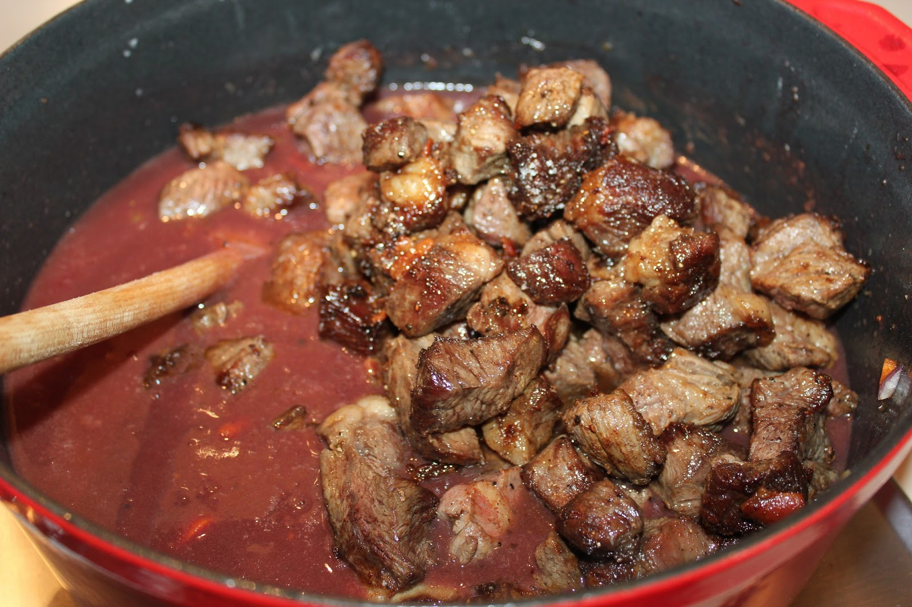
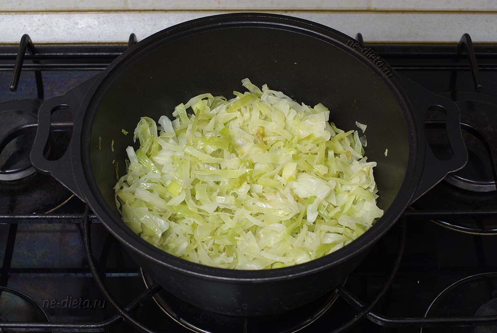
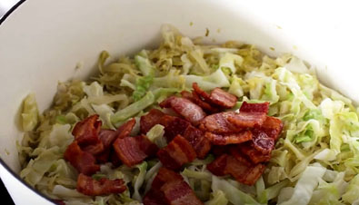
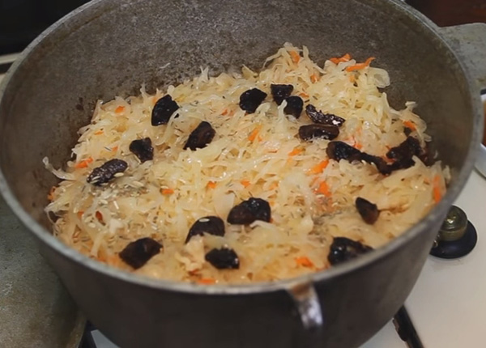
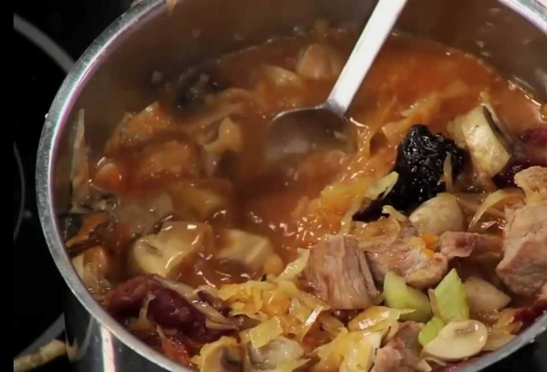

Обжарить мясо на сковородке. На готовности около 70% добавить копченое мясо на свой вкус и томатную пасту 
Копусту тушить до изменения цвета. Добавить квашенную капусту. Тушить около 20 минут, пока не станет мягче 
Добавить мясо в капусту, немного воды. На этом этапе добавляем лавровый лист и перец горошек. 
Добавляем чернослив. Предварительно тщательно проверти на наличие косточек. Оставляем тушиться минут 40. 
Добавляем вино. Желательно модера. Если нет, то портвейн. Тушить минут 10. В конце добавить еще модеру, перемешать и снять с огня. 